Chapter 4: Cell Structure¶
Introduction¶
![Part a: Human cheek cells as viewed by light microscopy have an irregular round shape and a well-defined nucleus that takes up about one-half of the cell. Part b: Onion skin cells, also viewed by light microscopy, are long and thin with a rectangular shape defined by a cell wall. They are about as wide as a cheek cell, but at least five times as long. The cell wall and nucleus are well defined in the micrograph. The onion cell nucleus is about the same size as the cheek cell nucleus. Part c: In this scanning electron micrograph of bacterial cells, the cell surface has a three-dimensional shape. Three of the bacteria are oval in shape. The fourth is round and has protrusions called pili. One pilus connects this bacterium to another.](img/figure-04-00-00-2013.webp)
Close your eyes and picture a brick wall. What is the wall's basic building block? It is a single brick. Like a brick wall, cells are the building blocks that make up your body.
Your body has many kinds of cells, each specialized for a specific purpose. Just as we use a variety of materials to build a home, the human body is constructed from many cell types. For example, epithelial cells protect the body's surface and cover the organs and body cavities within. Bone cells help to support and protect the body. Immune system cells fight invading bacteria. Additionally, blood and blood cells carry nutrients and oxygen throughout the body while removing carbon dioxide. Each of these cell types plays a vital role during the body's growth, development, and day-to-day maintenance. In spite of their enormous variety, however, cells from all organisms—even ones as diverse as bacteria, onion, and human—share certain fundamental characteristics.
4.1 Studying Cells¶
Learning Objectives
By the end of this section, you will be able to do the following:
- Describe the role of cells in organisms
- Compare and contrast light microscopy and electron microscopy
- Summarize cell theory
A cell is the smallest unit of a living thing. Whether comprised of one cell (like bacteria) or many cells (like a human), we call it an organism. Thus, cells are the basic building blocks of all organisms.
Several cells of one kind that interconnect with each other and perform a shared function form tissues. These tissues combine to form an organ (your stomach, heart, or brain), and several organs comprise an organ system (such as the digestive system, circulatory system, or nervous system). Several systems that function together form an organism (like a human being). Here, we will examine the structure and function of cells.
There are many types of cells, which scientists group into one of two broad categories: prokaryotic and eukaryotic. For example, we classify both animal and plant cells as eukaryotic cells; whereas, we classify bacterial cells as prokaryotic. Before discussing the criteria for determining whether a cell is prokaryotic or eukaryotic, we will first examine how biologists study cells.
Microscopy¶
Cells vary in size. With few exceptions, we cannot see individual cells with the naked eye, so scientists use microscopes (micro- = “small”; -scope = “to look at”) to study them. A microscope is an instrument that magnifies an object. We photograph most cells with a microscope, so we can call these images micrographs.
The optics of a microscope’s lenses change the image orientation that the user sees. A specimen that is right-side up and facing right on the microscope slide will appear upside-down and facing left when one views through a microscope, and vice versa. Similarly, if one moves the slide left while looking through the microscope, it will appear to move right, and if one moves it down, it will seem to move up. This occurs because microscopes use two sets of lenses to magnify the image. Because of the manner by which light travels through the lenses, this two lens system produces an inverted image (binocular, or dissecting microscopes, work in a similar manner, but include an additional magnification system that makes the final image appear to be upright).
Light Microscopes¶
To give you a sense of cell size, a typical human red blood cell is about eight millionths of a meter or eight micrometers (abbreviated as eight μm) in diameter. A pin head is about two thousandths of a meter (two mm) in diameter. That means about 250 red blood cells could fit on a pinhead.
Most student microscopes are light microscopes (Figure 4.2a). Visible light passes and bends through the lens system to enable the user to see the specimen. Light microscopes are advantageous for viewing living organisms, but since individual cells are generally transparent, their components are not distinguishable unless they are colored with special stains. Staining, however, usually kills the cells.
Light microscopes that undergraduates commonly use in the laboratory magnify up to approximately 400 times. Two parameters that are important in microscopy are magnification and resolving power. Magnification is the process of enlarging an object in appearance. Resolving power is the microscope's ability to distinguish two adjacent structures as separate: the higher the resolution, the better the image's clarity and detail. When one uses oil immersion lenses to study small objects, magnification usually increases to 1,000 times. In order to gain a better understanding of cellular structure and function, scientists typically use electron microscopes.
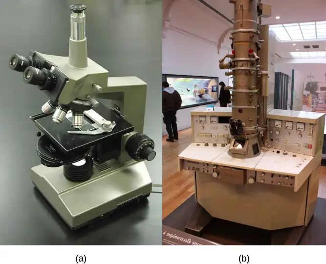
Electron Microscopes¶
In contrast to light microscopes, electron microscopes (Figure 4.2b) use a beam of electrons instead of a beam of light. Not only does this allow for higher magnification and, thus, more detail (Figure 4.3), it also provides higher resolving power. The method to prepare the specimen for viewing with an electron microscope kills the specimen. Electrons have short wavelengths (shorter than photons) that move best in a vacuum, so we cannot view living cells with an electron microscope.
In a scanning electron microscope, a beam of electrons moves back and forth across a cell’s surface, creating details of cell surface characteristics. In a transmission electron microscope, the electron beam penetrates the cell and provides details of a cell’s internal structures. As you might imagine, electron microscopes are significantly more bulky and expensive than light microscopes.
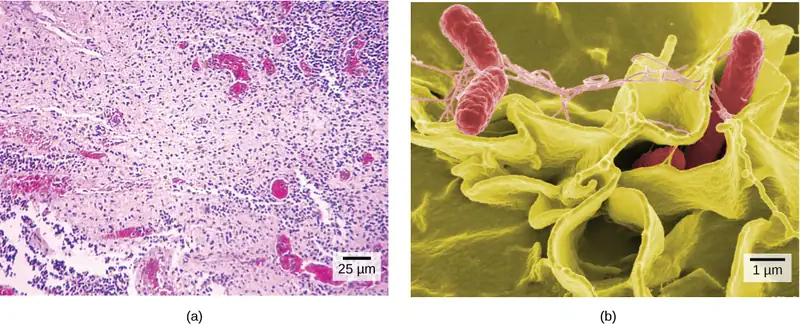
Interactive
For another perspective on cell size, try the HowBig interactive.
Cell Theory¶
The microscopes we use today are far more complex than those that Dutch shopkeeper Antony van Leeuwenhoek, used in the 1600s. Skilled in crafting lenses, van Leeuwenhoek observed the movements of single-celled organisms, which he collectively termed “animalcules.”
In the 1665 publication Micrographia, experimental scientist Robert Hooke coined the term “cell” for the box-like structures he observed when viewing cork tissue through a lens. In the 1670s, van Leeuwenhoek discovered bacteria and protozoa. Later advances in lenses, microscope construction, and staining techniques enabled other scientists to see some components inside cells.
By the late 1830s, botanist Matthias Schleiden and zoologist Theodor Schwann were studying tissues and proposed the unified cell theory, which states that one or more cells comprise all living things, the cell is the basic unit of life, and new cells arise from existing cells. Rudolf Virchow later made important contributions to this theory.
Career Connection: Cytotechnologist
Have you ever heard of a medical test called a Pap smear (Figure 4.4)? In this test, a doctor takes a small sample of cells from the patient's uterine cervix and sends it to a medical lab where a cytotechnologist stains the cells and examines them for any changes that could indicate cervical cancer or a microbial infection.
Cytotechnologists (cyto- = “cell”) are professionals who study cells via microscopic examinations and other laboratory tests. They are trained to determine which cellular changes are within normal limits and which are abnormal. Their focus is not limited to cervical cells. They study cellular specimens that come from all organs. When they notice abnormalities, they consult a pathologist, a medical doctor who interprets and diagnoses changes that disease in body tissue and fluids cause.
Cytotechnologists play a vital role in saving people’s lives. When doctors discover abnormalities early, a patient’s treatment can begin sooner, which usually increases the chances of a successful outcome.
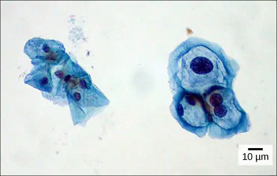
4.2 Prokaryotic Cells¶
Learning Objectives
By the end of this section, you will be able to do the following:
- Name examples of prokaryotic and eukaryotic organisms
- Compare and contrast prokaryotic and eukaryotic cells
- Describe the relative sizes of different cells
- Explain why cells must be small
Cells fall into one of two broad categories: prokaryotic and eukaryotic. We classify only the predominantly single-celled organisms Bacteria and Archaea as prokaryotes (pro- = “before”; -kary- = “nucleus”). Animal cells, plants, fungi, and protists are all eukaryotes (eu- = “true”).
Components of Prokaryotic Cells¶
All cells share four common components: 1) a plasma membrane, an outer covering that separates the cell’s interior from its surrounding environment; 2) cytoplasm, consisting of a jelly-like cytosol within the cell in which there are other cellular components; 3) DNA, the cell's genetic material; and 4) ribosomes, which synthesize proteins. However, prokaryotes differ from eukaryotic cells in several ways.
A prokaryote is a simple, mostly single-celled (unicellular) organism that lacks a nucleus, or any other membrane-bound organelle. We will shortly come to see that this is significantly different in eukaryotes. Prokaryotic DNA is in the cell's central part: the nucleoid (Figure 4.5).
![In this illustration, the prokaryotic cell has an oval shape. The circular chromosome is concentrated in a region called the nucleoid. The fluid inside the cell is called the cytoplasm. Ribosomes, depicted as small circles, float in the cytoplasm. The cytoplasm is encased by a plasma membrane, which in turn is encased by a cell wall. A capsule surrounds the cell wall. The bacterium depicted has a flagellum protruding from one narrow end. Pili are small protrusions that project from the capsule in all directions.](img/figure-04-02-01-5016.webp)
Most bacteria have a peptidoglycan cell wall and many have a polysaccharide capsule (Figure 4.5). The cell wall acts as an extra layer of protection, helps the cell maintain its shape, and prevents dehydration. The capsule enables the cell to attach to surfaces in its environment. Some prokaryotes have flagella, pili, or fimbriae. Flagella are used for locomotion. Pili exchange genetic material during conjugation, the process by which one bacterium transfers genetic material to another through direct contact. Bacteria use fimbriae to attach to a host cell.
Career Connection: Microbiologist
The most effective action anyone can take to prevent the spread of contagious illnesses is to wash their hands. Why? Because microbes (organisms so tiny that they can only be seen with microscopes) are ubiquitous. They live on doorknobs, money, your hands, and many other surfaces. If someone sneezes into his hand and touches a doorknob, and afterwards you touch that same doorknob, the microbes from the sneezer’s mucus are now on your hands. If you touch your hands to your mouth, nose, or eyes, those microbes can enter your body and could make you sick.
However, not all microbes (also called microorganisms) cause disease; most are actually beneficial. You have microbes in your gut that make vitamin K. Other microorganisms are used to ferment beer and wine.
Microbiologists are scientists who study microbes. Microbiologists can pursue a number of careers. Not only do they work in the food industry, they are also employed in the veterinary and medical fields. They can work in the pharmaceutical sector, serving key roles in research and development by identifying new antibiotic sources that can treat bacterial infections.
Environmental microbiologists may look for new ways to use specially selected or genetically engineered microbes to remove pollutants from soil or groundwater, as well as hazardous elements from contaminated sites. We call using these microbes bioremediation technologies. Microbiologists can also work in the bioinformatics field, providing specialized knowledge and insight for designing, developing, and optimizing specificity of computer models of, for example, bacterial epidemics.
Cell Size¶
At 0.1 to 5.0 μm in diameter, prokaryotic cells are significantly smaller than eukaryotic cells, which have diameters ranging from 10 to 100 μm (Figure 4.6). The prokaryotes' small size allows ions and organic molecules that enter them to quickly diffuse to other parts of the cell. Similarly, any wastes produced within a prokaryotic cell can quickly diffuse. This is not the case in eukaryotic cells, which have developed different structural adaptations to enhance intracellular transport.
![Relative sizes on a logarithmic scale, from 0.1 n m to 1 m, are shown. Objects are shown from smallest to largest. The smallest object shown, an atom, is about .1 n m in size. The next largest objects shown are lipids and proteins; these molecules are between 1 and 10 n m. A flu virus is just under 100 n m. Bacteria and mitochondria are both about 1 greek mu m. Plant and animal cells are both between 10 and 100 greek mu m. A human egg is between 100 greek mu m and 1 m m. A frog egg is about 1 m m, A chicken egg and an ostrich egg are both between 10 and 100 m m, but an ostrich egg is larger. For comparison, a human is approximately 1 m tall. Appropriate instruments to view different size ranges are also shown. An electron microscope is used for things from less than .1 n m to almost 100 greek mu m. A light microscope is used for things from 100 n m to over 1 m m. The naked eye is used for things 100 greek mu m and up.](img/figure-04-02-02.webp)
Small size, in general, is necessary for all cells, whether prokaryotic or eukaryotic. Let’s examine why that is so. First, we’ll consider the area and volume of a typical cell. Not all cells are spherical in shape, but most tend to approximate a sphere. You may remember from your high school geometry course that the formula for the surface area of a sphere is 4πr2, while the formula for its volume is 4πr3/3. Thus, as the radius of a cell increases, its surface area increases as the square of its radius, but its volume increases as the cube of its radius (much more rapidly). Therefore, as a cell increases in size, its surface area-to-volume ratio decreases. This same principle would apply if the cell had a cube shape (Figure 4.7). If the cell grows too large, the plasma membrane will not have sufficient surface area to support the rate of diffusion required for the increased volume. In other words, as a cell grows, it becomes less efficient. One way to become more efficient is to divide. Other ways are to increase surface area by foldings of the cell membrane, become flat or thin and elongated, or develop organelles that perform specific tasks. These adaptations lead to developing more sophisticated cells, which we call eukaryotic cells.
Visual Connection
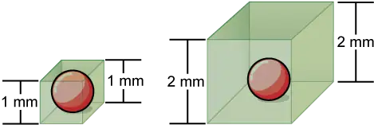
Prokaryotic cells are much smaller than eukaryotic cells. What advantages might small cell size confer on a cell? What advantages might large cell size have?
4.3 Eukaryotic Cells¶
Learning Objectives
By the end of this section, you will be able to do the following:
- Describe the structure of eukaryotic cells
- Compare animal cells with plant cells
- State the role of the plasma membrane
- Summarize the functions of the major cell organelles
Have you ever heard the phrase “form follows function?” It’s a philosophy that many industries follow. In architecture, this means that buildings should be constructed to support the activities that will be carried out inside them. For example, a skyscraper should include several elevator banks. A hospital should have its emergency room easily accessible.
Our natural world also utilizes the principle of form following function, especially in cell biology, and this will become clear as we explore eukaryotic cells (Figure 4.8). Unlike prokaryotic cells, eukaryotic cells have: 1) a membrane-bound nucleus; 2) numerous membrane-bound organelles such as the endoplasmic reticulum, Golgi apparatus, chloroplasts, mitochondria, and others; and 3) several, rod-shaped chromosomes. Because a membrane surrounds eukaryotic cell’s nucleus, it has a “true nucleus.” The word “organelle” means “little organ,” and, as we already mentioned, organelles have specialized cellular functions, just as your body's organs have specialized functions.
At this point, it should be clear to you that eukaryotic cells have a more complex structure than prokaryotic cells. Organelles allow different functions to be compartmentalized in different areas of the cell. Before turning to organelles, let’s first examine two important components of the cell: the plasma membrane and the cytoplasm.
Visual Connection
![Part a: This illustration shows a typical eukaryotic animal cell, which is egg shaped. The fluid inside the cell is called the cytoplasm, and the cell is surrounded by a cell membrane. The nucleus takes up about one-half the width of the cell. Inside the nucleus is the chromatin, which is composed of DNA and associated proteins. A region of the chromatin is condensed into the nucleolus, a structure where ribosomes are synthesized. The nucleus is encased in a nuclear envelope, which is perforated by protein-lined pores that allow entry of material into the nucleus. The nucleus is surrounded by the rough and smooth endoplasmic reticulum, or ER. The smooth ER is the site of lipid synthesis. The rough ER has embedded ribosomes that give it a bumpy appearance. It synthesizes membrane and secretory proteins. In addition to the ER, many other organelles float inside the cytoplasm. These include the Golgi apparatus, which modifies proteins and lipids synthesized in the ER. The Golgi apparatus is made of layers of flat membranes. Mitochondria, which produce food for the cell, have an outer membrane and a highly folded inner membrane. Other, smaller organelles include peroxisomes that house oxidative metabolism, lysosomes that digest food, and vacuoles. Ribosomes, responsible for protein synthesis, also float freely in the cytoplasm and are depicted as small dots. The last cellular component shown is the cytoskeleton, which has four different types of components: microfilaments, intermediate filaments, microtubules, and centrosomes. Microfilaments are fibrous proteins that line the cell membrane and make up the cellular cortex. Intermediate filaments are fibrous proteins that hold organelles in place. Microtubules form the mitotic spindle and maintain cell shape. Centrosomes are made of two tubular structures at right angles to one another. They form the microtubule-organizing center.](img/figure-03-03-01a-corrected.webp)
![Part b: This illustration depicts a typical eukaryotic plant cell. The nucleus of a plant cell contains chromatin and a nucleolus, the same as an animal cell. Other structures that the plant cell has in common with the animal cell include rough and smooth endoplasmic reticulum, the Golgi apparatus, mitochondria, peroxisomes, and ribosomes. The fluid inside the plant cell is called the cytoplasm, just as it is in an animal cell. The plant cell has three of the four cytoskeletal components found in animal cells: microtubules, intermediate filaments, and microfilaments. Plant cells do not have centrosomes. Plant cells have four structures not found in animals cells: chloroplasts, plastids, a central vacuole, and a cell wall. Chloroplasts are responsible for photosynthesis; they have an outer membrane, an inner membrane, and stack of membranes inside the inner membrane. The central vacuole is a very large, fluid-filled structure that maintains pressure against the cell wall. Plastids store pigments. The cell wall is outside the cell membrane.](img/figure-04-03-01b.webp)
If the nucleolus were not able to carry out its function, what other cellular organelles would be affected?
The Plasma Membrane¶
Like prokaryotes, eukaryotic cells have a plasma membrane (Figure 4.9), a phospholipid bilayer with embedded proteins that separates the internal contents of the cell from its surrounding environment. A phospholipid is a lipid molecule with two fatty acid chains and a phosphate-containing group. The plasma membrane controls the passage of organic molecules, ions, water, and oxygen into and out of the cell. Wastes (such as carbon dioxide and ammonia) also leave the cell by passing through the plasma membrane.
![The plasma membrane is composed of a phospholipid bilayer. In the bilayer, the two long hydrophobic tails of phospholipids face toward the center, and the hydrophilic head group faces the exterior. Integral membrane proteins and protein channels span the entire bilayer. Protein channels have a pore in the middle. Peripheral membrane proteins sit on the surface of the phospholipids, and are associated with the phospholipid head groups. On the exterior side of the membrane, carbohydrates are attached to certain proteins and lipids. Filaments of the cytoskeleton line the interior of the membrane.](img/figure-04-03-02-ee9a.webp)
The plasma membranes of cells that specialize in absorption fold into fingerlike projections that we call microvilli (singular = microvillus); (Figure 4.10). Such cells typically line the small intestine, the organ that absorbs nutrients from digested food. This is an excellent example of form following function. People with celiac disease have an immune response to gluten, which is a protein in wheat, barley, and rye. The immune response damages microvilli, and thus, afflicted individuals cannot absorb nutrients. This leads to malnutrition, cramping, and diarrhea. Patients suffering from celiac disease must follow a gluten-free diet.
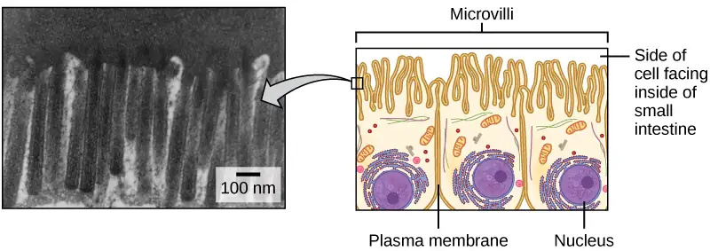
The Cytoplasm¶
The cytoplasm is the cell's entire region between the plasma membrane and the nuclear envelope (a structure we will discuss shortly). It is comprised of organelles suspended in the gel-like cytosol, the cytoskeleton, and various chemicals (Figure 4.8). Even though the cytoplasm consists of 70 to 80 percent water, it has a semi-solid consistency, which comes from the proteins within it. However, proteins are not the only organic molecules in the cytoplasm. Glucose and other simple sugars, polysaccharides, amino acids, nucleic acids, fatty acids, and derivatives of glycerol are also there. Ions of sodium, potassium, calcium, and many other elements also dissolve in the cytoplasm. Many metabolic reactions, including protein synthesis, take place in the cytoplasm.
The Nucleus¶
Typically, the nucleus is the most prominent organelle in a cell (Figure 4.8). The nucleus (plural = nuclei) houses the cell’s DNA and directs the synthesis of ribosomes and proteins. Let’s look at it in more detail (Figure 4.11).
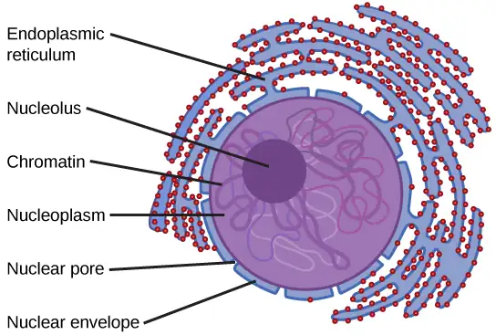
The Nuclear Envelope¶
The nuclear envelope is a double-membrane structure that constitutes the nucleus' outermost portion (Figure 4.11). Both the nuclear envelope's inner and outer membranes are phospholipid bilayers.
The nuclear envelope is punctuated with pores that control the passage of ions, molecules, and RNA between the nucleoplasm and cytoplasm. The nucleoplasm is the semi-solid fluid inside the nucleus, where we find the chromatin and the nucleolus.
Chromatin and Chromosomes¶
To understand chromatin, it is helpful to first explore chromosomes, structures within the nucleus that are made up of DNA, the hereditary material. You may remember that in prokaryotes, DNA is organized into a single circular chromosome. In eukaryotes, chromosomes are linear structures. Every eukaryotic species has a specific number of chromosomes in the nucleus of each cell. For example, in humans, the chromosome number is 46, while in fruit flies, it is eight. Chromosomes are only visible and distinguishable from one another when the cell is getting ready to divide. When the cell is in the growth and maintenance phases of its life cycle, proteins attach to chromosomes, and they resemble an unwound, jumbled bunch of threads. We call these unwound protein-chromosome complexes chromatin (Figure 4.12). Chromatin describes the material that makes up the chromosomes both when condensed and decondensed.
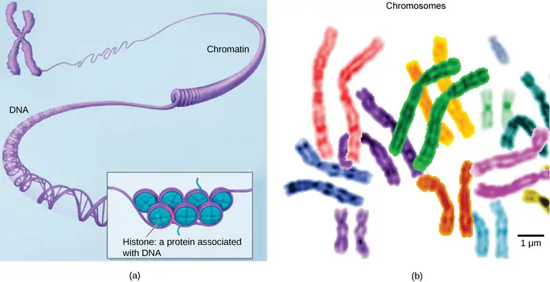
The Nucleolus¶
We already know that the nucleus directs the synthesis of ribosomes, but how does it do this? Some chromosomes have sections of DNA that encode ribosomal RNA. A darkly staining area within the nucleus called the nucleolus (plural = nucleoli) aggregates the ribosomal RNA with associated proteins to assemble the ribosomal subunits that are then transported out through the pores in the nuclear envelope to the cytoplasm.
Ribosomes¶
Ribosomes are the cellular structures responsible for protein synthesis. When we view them through an electron microscope, ribosomes appear either as clusters (polyribosomes) or single, tiny dots that float freely in the cytoplasm. They may be attached to the plasma membrane's cytoplasmic side or the endoplasmic reticulum's cytoplasmic side and the nuclear envelope's outer membrane (Figure 4.8). Electron microscopy shows us that ribosomes, which are large protein and RNA complexes, consist of two subunits, large and small (Figure 4.13). Ribosomes receive their “orders” for protein synthesis from the nucleus where the DNA transcribes into messenger RNA (mRNA). The mRNA travels to the ribosomes, which translate the code provided by the sequence of the nitrogenous bases in the mRNA into a specific order of amino acids in a protein. Amino acids are the building blocks of proteins.
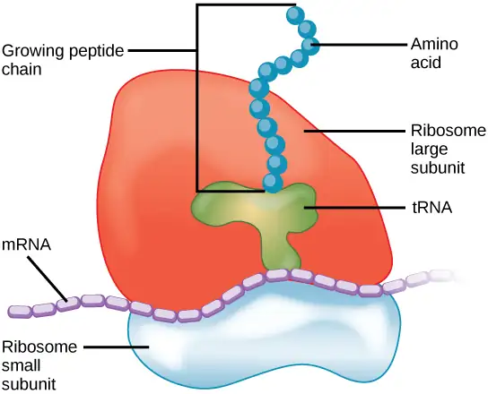
Because protein synthesis is an essential function of all cells (including enzymes, hormones, antibodies, pigments, structural components, and surface receptors), there are ribosomes in practically every cell. Ribosomes are particularly abundant in cells that synthesize large amounts of protein. For example, the pancreas is responsible for creating several digestive enzymes and the cells that produce these enzymes contain many ribosomes. Thus, we see another example of form following function.
Mitochondria¶
Scientists often call mitochondria (singular = mitochondrion) “powerhouses” or “energy factories” of both plant and animal cells because they are responsible for making adenosine triphosphate (ATP), the cell’s main energy-carrying molecule. ATP represents the cell's short-term stored energy. Cellular respiration is the process of making ATP using the chemical energy in glucose and other nutrients. In mitochondria, this process uses oxygen and produces carbon dioxide as a waste product. In fact, the carbon dioxide that you exhale with every breath comes from the cellular reactions that produce carbon dioxide as a byproduct.
In keeping with our theme of form following function, it is important to point out that muscle cells have a very high concentration of mitochondria that produce ATP. Your muscle cells need considerable energy to keep your body moving. When your cells don’t get enough oxygen, they do not make much ATP. Instead, producing lactic acid accompanies the small amount of ATP they make in the absence of oxygen.
Mitochondria are oval-shaped, double membrane organelles (Figure 4.14) that have their own ribosomes and DNA. Each membrane is a phospholipid bilayer embedded with proteins. The inner layer has folds called cristae. We call the area surrounded by the folds the mitochondrial matrix. The cristae and the matrix have different roles in cellular respiration.
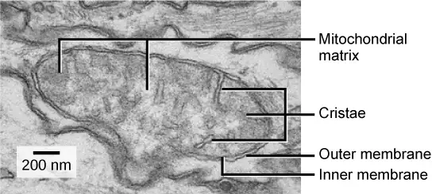
Peroxisomes¶
Peroxisomes are small, round organelles enclosed by single membranes. They carry out oxidation reactions that break down fatty acids and amino acids. They also detoxify many poisons that may enter the body. (Many of these oxidation reactions release hydrogen peroxide, H2O2, which would be damaging to cells; however, when these reactions are confined to peroxisomes, enzymes safely break down the H2O2 into oxygen and water.) For example, peroxisomes in liver cells detoxify alcohol. Glyoxysomes, which are specialized peroxisomes in plants, are responsible for converting stored fats into sugars. Plant cells contain many different types of peroxisomes that play a role in metabolism, pathogene defense, and stress response, to mention a few.
Vesicles and Vacuoles¶
Vesicles and vacuoles are membrane-bound sacs that function in storage and transport. Other than the fact that vacuoles are somewhat larger than vesicles, there is a very subtle distinction between them. Vesicle membranes can fuse with either the plasma membrane or other membrane systems within the cell. Additionally, some agents such as enzymes within plant vacuoles break down macromolecules. The vacuole's membrane does not fuse with the membranes of other cellular components.
Animal Cells versus Plant Cells¶
At this point, you know that each eukaryotic cell has a plasma membrane, cytoplasm, a nucleus, ribosomes, mitochondria, peroxisomes, and in some, vacuoles, but there are some striking differences between animal and plant cells. While both animal and plant cells have microtubule organizing centers (MTOCs), animal cells also have centrioles associated with the MTOC: a complex we call the centrosome. Animal cells each have a centrosome and lysosomes; whereas, most plant cells do not. Plant cells have a cell wall, chloroplasts and other specialized plastids, and a large central vacuole; whereas, animal cells do not.
The Centrosome¶
The centrosome is a microtubule-organizing center found near the nuclei of animal cells. It contains a pair of centrioles, two structures that lie perpendicular to each other (Figure 4.15). Each centriole is a cylinder of nine triplets of microtubules.
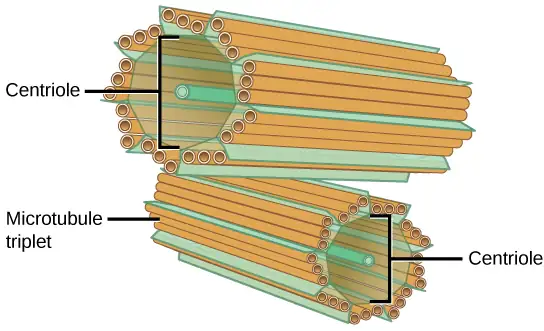
The centrosome (the organelle where all microtubules originate) replicates itself before a cell divides, and the centrioles appear to have some role in pulling the duplicated chromosomes to opposite ends of the dividing cell. However, the centriole's exact function in cell division isn’t clear, because cells that have had the centrosome removed can still divide, and plant cells, which lack centrosomes, are capable of cell division.
Lysosomes¶
Animal cells have another set of organelles that most plant cells do not: lysosomes. The lysosomes are the cell’s “garbage disposal.” In plant cells, the digestive processes take place in vacuoles. Enzymes within the lysosomes aid in breaking down proteins, polysaccharides, lipids, nucleic acids, and even worn-out organelles. These enzymes are active at a much lower pH than the cytoplasm's. Therefore, the pH within lysosomes is more acidic than the cytoplasm's pH. Many reactions that take place in the cytoplasm could not occur at a low pH, so again, the advantage of compartmentalizing the eukaryotic cell into organelles is apparent.
The Cell Wall¶
If you examine Figure 4.8, the plant cell diagram, you will see a structure external to the plasma membrane. This is the cell wall, a rigid covering that protects the cell, provides structural support, and gives shape to the cell. Fungal and some protistan cells also have cell walls. While the prokaryotic cell walls' chief component is peptidoglycan, the major organic molecule in the plant (and some protists') cell wall is cellulose (Figure 4.16), a polysaccharide comprised of glucose units. Have you ever noticed that when you bite into a raw vegetable, like celery, it crunches? That’s because you are tearing the celery cells' rigid cell walls with your teeth.
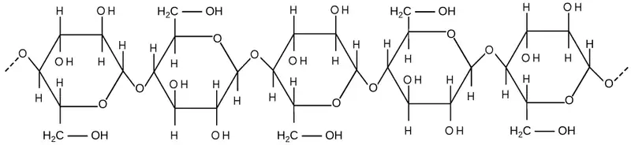
Chloroplasts¶
Like the mitochondria, chloroplasts have their own DNA and ribosomes, but chloroplasts have an entirely different function. Chloroplasts are plant cell organelles that carry out photosynthesis. Photosynthesis is the series of reactions that use carbon dioxide, water, and light energy to make glucose and oxygen. This is a major difference between plants and animals. Plants (autotrophs) are able to make their own food, like sugars used in cellular respiration to provide ATP energy generated in the plant mitochondria. Animals (heterotrophs) must ingest their food.
Like mitochondria, chloroplasts have outer and inner membranes, but within the space enclosed by a chloroplast’s inner membrane is a set of interconnected and stacked fluid-filled membrane sacs we call thylakoids (Figure 4.17). Each thylakoid stack is a granum (plural = grana). We call the fluid enclosed by the inner membrane that surrounds the grana the stroma.
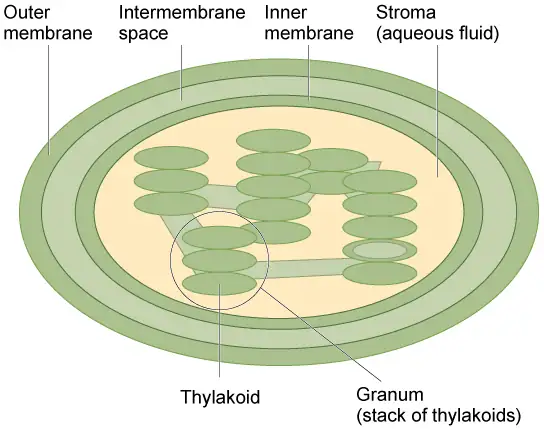
The chloroplasts contain a green pigment, chlorophyll, which captures the light energy that drives the reactions of photosynthesis. Like plant cells, photosynthetic protists also have chloroplasts. Some bacteria perform photosynthesis, but their chlorophyll is not relegated to an organelle.
Evolution Connection: Endosymbiosis
We have mentioned that both mitochondria and chloroplasts contain DNA and ribosomes. Have you wondered why? Strong evidence points to endosymbiosis as the explanation.
Symbiosis is any type of close and long term relationship between two organisms from different species depend on each other for their survival. In some cases both organisms benefit from the relationship. Endosymbiosis (endo- = “within”) is a mutually beneficial relationship in which one organism lives inside the other. Endosymbiotic relationships abound in nature. We have already mentioned that microbes that produce vitamin K live inside the human gut. This relationship is beneficial for us because we are unable to synthesize vitamin K. It is also beneficial for the microbes because they are protected from other organisms and from drying out, and they receive abundant food from the environment of the large intestine.
Scientists have long noticed that bacteria, mitochondria, and chloroplasts are similar in size. We also know that bacteria have DNA and ribosomes, just like mitochondria and chloroplasts. Scientists believe that host cells and bacteria formed an endosymbiotic relationship when the host cells ingested both aerobic and autotrophic bacteria (cyanobacteria) but did not destroy them. Through many millions of years of evolution, these ingested bacteria became more specialized in their functions, with the aerobic bacteria becoming mitochondria and the autotrophic bacteria becoming chloroplasts.
The Central Vacuole¶
Previously, we mentioned vacuoles as essential components of plant cells. If you look at Figure 4.8b, you will see that plant cells each have a large central vacuole that occupies most of the cell's volume. The central vacuole plays a key role in regulating the cell’s concentration of water in changing environmental conditions. Have you ever noticed that if you forget to water a plant for a few days, it wilts? That’s because as the water concentration in the soil becomes lower than the water concentration in the plant, water moves out of the central vacuoles and cytoplasm. As the central vacuole shrinks, it leaves the cell wall unsupported. This loss of support to the plant's cell walls results in the wilted appearance.
The central vacuole also supports the cell's expansion. When the central vacuole holds more water, the cell becomes larger without having to invest considerable energy in synthesizing new cytoplasm.
4.4 The Endomembrane System and Proteins¶
Learning Objectives
By the end of this section, you will be able to do the following:
- List the components of the endomembrane system
- Recognize the relationship between the endomembrane system and its functions
The endomembrane system (endo = “within”) is a group of membranes and organelles (Figure 4.18) in eukaryotic cells that works together to modify, package, and transport lipids and proteins. It includes the nuclear envelope, lysosomes, and vesicles, which we have already mentioned, and the endoplasmic reticulum and Golgi apparatus, which we will cover shortly. Although not technically within the cell, the plasma membrane is included in the endomembrane system because, as you will see, it interacts with the other endomembranous organelles. The endomembrane system does not include either mitochondria or chloroplast membranes.
Visual Connection
![The left part of this figure shows the rough E R with an integral membrane protein embedded in it. The part of the protein facing the inside of the E R has a carbohydrate attached to it. The protein is shown leaving the E R in a vesicle that fuses with the cis side of the Golgi apparatus. The Golgi apparatus consists of several layers of membranes, called cisternae. As the protein passes through the cisternae, it is further modified by the addition of more carbohydrates. Eventually, it leaves the trans face of the Golgi in a vesicle. The vesicle fuses with the cell membrane so that the carbohydrate that was on the inside of the vesicle now faces the outside of the membrane. At the same time, the contents of the vesicle are ejected from the cell.](img/figure-04-04-01-08bf.webp)
If a peripheral membrane protein were synthesized in the lumen (inside) of the ER, would it end up on the inside or outside of the plasma membrane?
The Endoplasmic Reticulum¶
The endoplasmic reticulum (ER) (Figure 4.18) is a series of interconnected membranous sacs and tubules that collectively modifies proteins and synthesizes lipids. However, these two functions take place in separate areas of the ER: the rough ER and the smooth ER, respectively.
We call the ER tubules' hollow portion the lumen or cisternal space. The ER's membrane, which is a phospholipid bilayer embedded with proteins, is continuous with the nuclear envelope.
Rough ER¶
Scientists have named the rough endoplasmic reticulum (RER) as such because the ribosomes attached to its cytoplasmic surface give it a studded appearance when viewing it through an electron microscope (Figure 4.19).
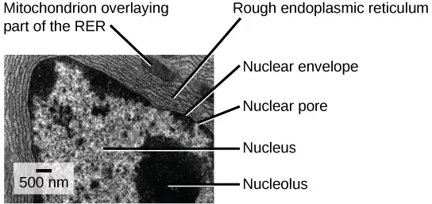
Ribosomes transfer their newly synthesized proteins into the RER's lumen where they undergo structural modifications, such as folding or acquiring side chains. These modified proteins incorporate into cellular membranes—the ER or the ER's or other organelles' membranes. The proteins can also secrete from the cell (such as protein hormones, enzymes). The RER also makes phospholipids for cellular membranes.
If the phospholipids or modified proteins are not destined to stay in the RER, they will reach their destinations via transport vesicles that bud from the RER’s membrane (Figure 4.18).
Since the RER is engaged in modifying proteins (such as enzymes, for example) that secrete from the cell, you would be correct in assuming that the RER is abundant in cells that secrete proteins. This is the case with liver cells, for example.
Smooth ER¶
The smooth endoplasmic reticulum (SER) is continuous with the RER but has few or no ribosomes on its cytoplasmic surface (Figure 4.18). SER functions include synthesis of carbohydrates, lipids, and steroid hormones; detoxification of medications and poisons; and storing calcium ions.
In muscle cells, a specialized SER, the sarcoplasmic reticulum, is responsible for storing calcium ions that are needed to trigger the muscle cells' coordinated contractions.
Interactive
You can watch an excellent animation of the endomembrane system here. At the end of the animation, there is a short self-assessment.
Career Connection: Cardiologist
Heart disease is the leading cause of death in the United States. This is primarily due to our sedentary lifestyle and our high trans-fat diets.
Heart failure is just one of many disabling heart conditions. Heart failure does not mean that the heart has stopped working. Rather, it means that the heart can’t pump with sufficient force to transport oxygenated blood to all the vital organs. Left untreated, heart failure can lead to kidney failure and other organ failure.
Cardiac muscle tissue comprises the heart's wall. Heart failure occurs when cardiac muscle cells' endoplasmic reticula do not function properly. As a result, an insufficient number of calcium ions are available to trigger a sufficient contractile force.
Cardiologists (cardi- = “heart”; -ologist = “one who studies”) are doctors who specialize in treating heart diseases, including heart failure. Cardiologists can diagnose heart failure via a physical examination, results from an electrocardiogram (ECG, a test that measures the heart's electrical activity), a chest X-ray to see whether the heart is enlarged, and other tests. If the cardiologist diagnoses heart failure, they will typically prescribe appropriate medications and recommend a reduced table salt intake and a supervised exercise program.
The Golgi Apparatus¶
We have already mentioned that vesicles can bud from the ER and transport their contents elsewhere, but where do the vesicles go? Before reaching their final destination, the lipids or proteins within the transport vesicles still need sorting, packaging, and tagging so that they end up in the right place. Sorting, tagging, packaging, and distributing lipids and proteins takes place in the Golgi apparatus (also called the Golgi body), a series of flattened membranous sacs (Figure 4.20).
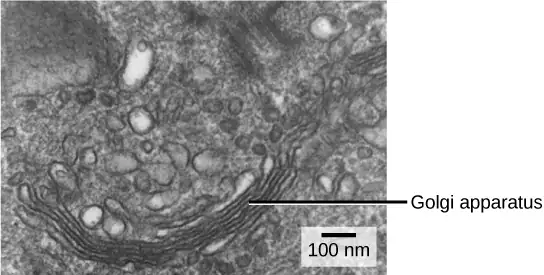
The side of the Golgi apparatus that is closer to the ER is called the cis face. The opposite side is the trans face. The transport vesicles that formed from the ER travel to the cis face, fuse with it, and empty their contents into the Golgi apparatus' lumen. As the proteins and lipids travel through the Golgi, they undergo further modifications that allow them to be sorted. The most frequent modification is adding short sugar molecule chains. These newly modified proteins and lipids then tag with phosphate groups or other small molecules in order to travel to their proper destinations.
Finally, the modified and tagged proteins are packaged into secretory vesicles that bud from the Golgi's trans face. While some of these vesicles deposit their contents into other cell parts where they will be used, other secretory vesicles fuse with the plasma membrane and release their contents outside the cell.
In another example of form following function, cells that engage in a great deal of secretory activity (such as salivary gland cells that secrete digestive enzymes or immune system cells that secrete antibodies) have an abundance of Golgi.
In plant cells, the Golgi apparatus has the additional role of synthesizing polysaccharides, some of which are incorporated into the cell wall and some of which other cell parts use.
Career Connection: Geneticist
Many diseases arise from genetic mutations that prevent synthesizing critical proteins. One such disease is Lowe disease (or oculocerebrorenal syndrome, because it affects the eyes, brain, and kidneys). In Lowe disease, there is a deficiency in an enzyme localized to the Golgi apparatus. Children with Lowe disease are born with cataracts, typically develop kidney disease after the first year of life, and may have intellectual disabilities.
A mutation on the X chromosome causes Lowe disease. The X chromosome is one of the two human sex chromosomes, as these chromosomes determine a person's sex. Females possess two X chromosomes while males possess one X and one Y chromosome. In females, the genes on only one of the two X chromosomes are expressed. Females who carry the Lowe disease gene on one of their X chromosomes are carriers and do not show symptoms of the disease. However, males only have one X chromosome and the genes on this chromosome are always expressed. Therefore, males will always have Lowe disease if their X chromosome carries the Lowe disease gene. Geneticists have identified the mutated gene's location, as well as many other mutation locations that cause genetic diseases. Through prenatal testing, a pregnant person can find out if the fetus they are carrying may be afflicted with one of several genetic diseases.
Geneticists analyze prenatal genetic test results and may counsel pregnant people on available options. They may also conduct genetic research that leads to new drugs or foods, or perform DNA analyses for forensic investigations.
Lysosomes¶
In addition to their role as the digestive component and organelle-recycling facility of animal cells, lysosomes are part of the endomembrane system. Lysosomes also use their hydrolytic enzymes to destroy pathogens (disease-causing organisms) that might enter the cell. A good example of this occurs in macrophages, a group of white blood cells which are part of your body’s immune system. In a process that scientists call phagocytosis or endocytosis, a section of the macrophage's plasma membrane invaginates (folds in) and engulfs a pathogen. The invaginated section, with the pathogen inside, then pinches itself off from the plasma membrane and becomes a vesicle. The vesicle fuses with a lysosome. The lysosome’s hydrolytic enzymes then destroy the pathogen (Figure 4.21).
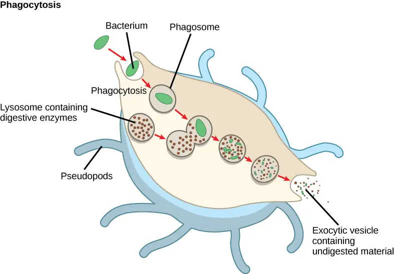
4.5 The Cytoskeleton¶
Learning Objectives
By the end of this section, you will be able to do the following:
- Describe the cytoskeleton
- Compare the roles of microfilaments, intermediate filaments, and microtubules
- Compare and contrast cilia and flagella
- Summarize the differences among the components of prokaryotic cells, animal cells, and plant cells
If you were to remove all the organelles from a cell, would the plasma membrane and the cytoplasm be the only components left? No. Within the cytoplasm, there would still be ions and organic molecules, plus a network of protein fibers that help maintain the cell's shape, secure some organelles in specific positions, allow cytoplasm and vesicles to move within the cell, and enable cells within multicellular organisms to move. Collectively, scientists call this network of protein fibers the cytoskeleton. There are three types of fibers within the cytoskeleton: microfilaments, intermediate filaments, and microtubules (Figure 4.22). Here, we will examine each.
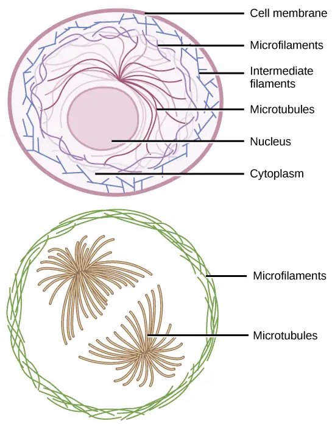
Microfilaments¶
Of the three types of protein fibers in the cytoskeleton, microfilaments are the narrowest. They function in cellular movement, have a diameter of about 7 nm, and are comprised of two globular protein intertwined strands, which we call actin (Figure 4.23). For this reason, we also call microfilaments actin filaments.
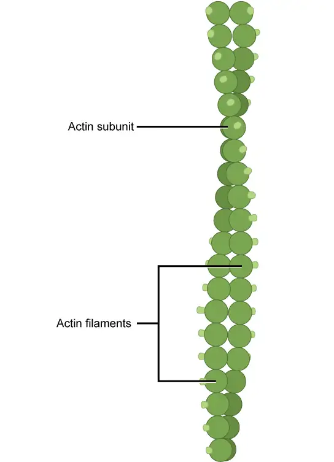
ATP powers actin to assemble its filamentous form, which serves as a track for the movement of a motor protein we call myosin. This enables actin to engage in cellular events requiring motion, such as cell division in eukaryotic cells and cytoplasmic streaming, which is the cell cytoplasm's circular movement in plant cells. Actin and myosin are plentiful in muscle cells. When your actin and myosin filaments slide past each other, your muscles contract.
Microfilaments also provide some rigidity and shape to the cell. They can depolymerize (disassemble) and reform quickly, thus enabling a cell to change its shape and move. White blood cells (your body’s infection-fighting cells) make good use of this ability. They can move to an infection site and phagocytize the pathogen.
Interactive
To see an example of a white blood cell in action, watch a short time-lapse video of the cell capturing two bacteria. It engulfs one and then moves on to the other. chasing_bcteria
Intermediate Filaments¶
Several strands of fibrous proteins that are wound together comprise intermediate filaments (Figure 4.24). Cytoskeleton elements get their name from the fact that their diameter, 8 to 10 nm, is between those of microfilaments and microtubules.
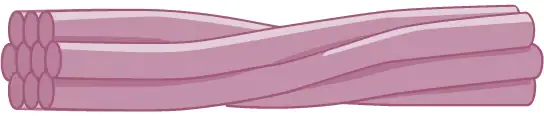
Intermediate filaments have no role in cell movement. Their function is purely structural. They bear tension, thus maintaining the cell's shape, and anchor the nucleus and other organelles in place. Figure 4.22 shows how intermediate filaments create a supportive scaffolding inside the cell.
The intermediate filaments are the most diverse group of cytoskeletal elements. Several fibrous protein types are in the intermediate filaments. You are probably most familiar with keratin, the fibrous protein that strengthens your hair, nails, and the skin's epidermis.
Microtubules¶
As their name implies, microtubules are small hollow tubes. Polymerized dimers of α-tubulin and β-tubulin, two globular proteins, comprise the microtubule's walls (Figure 4.25). With a diameter of about 25 nm, microtubules are cytoskeletons' widest components. They help the cell resist compression, provide a track along which vesicles move through the cell, and pull replicated chromosomes to opposite ends of a dividing cell. Like microfilaments, microtubules can disassemble and reform quickly.
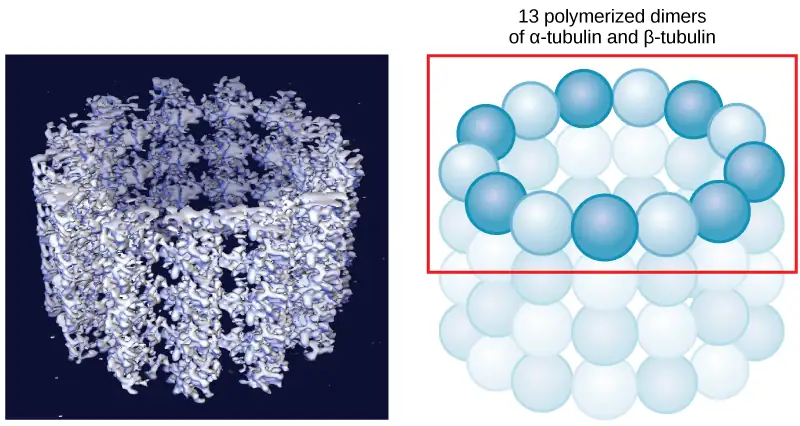
Microtubules are also the structural elements of flagella, cilia, and centrioles (the latter are the centrosome's two perpendicular bodies). In animal cells, the centrosome is the microtubule-organizing center. In eukaryotic cells, flagella and cilia are quite different structurally from their counterparts in prokaryotes, as we discuss below.
Flagella and Cilia¶
The flagella (singular = flagellum) are long, hair-like structures that extend from the plasma membrane and enable an entire cell to move (for example, sperm, Euglena, and some prokaryotes). When present, the cell has just one flagellum or a few flagella. However, when cilia (singular = cilium) are present, many of them extend along the plasma membrane's entire surface. They are short, hair-like structures that move entire cells (such as paramecia) or substances along the cell's outer surface (for example, the cilia of cells lining the Fallopian tubes that move the ovum toward the uterus, or cilia lining the cells of the respiratory tract that trap particulate matter and move it toward your nostrils.)
Despite their differences in length and number, flagella and cilia share a common structural arrangement of microtubules called a “9 + 2 array.” This is an appropriate name because a single flagellum or cilium is made of a ring of nine microtubule doublets, surrounding a single microtubule doublet in the center (Figure 4.26).
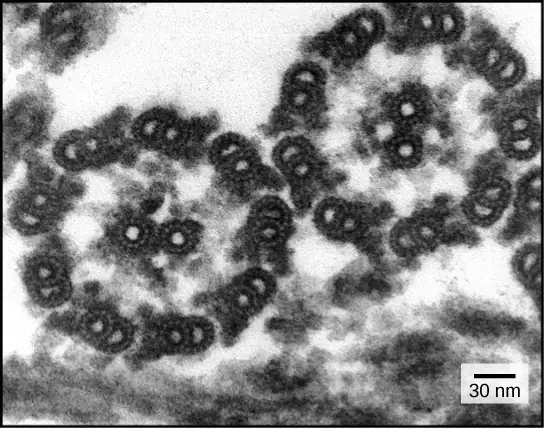
You have now completed a broad survey of prokaryotic and eukaryotic cell components. For a summary of cellular components in prokaryotic and eukaryotic cells, see Table 4.1.
Table 4.1
| Components of Prokaryotic and Eukaryotic Cells | ||||
|---|---|---|---|---|
| Cell Component | Function | Present in Prokaryotes? | Present in Animal Cells? | Present in Plant Cells? |
| Plasma membrane | Separates cell from external environment; controls passage of organic molecules, ions, water, oxygen, and wastes into and out of cell | Yes | Yes | Yes |
| Cytoplasm | Provides turgor pressure to plant cells as fluid inside the central vacuole; site of many metabolic reactions; medium in which organelles are found | Yes | Yes | Yes |
| Nucleolus | Darkened area within the nucleus where ribosomal subunits are synthesized. | No | Yes | Yes |
| Nucleus | Cell organelle that houses DNA and directs synthesis of ribosomes and proteins | No | Yes | Yes |
| Ribosomes | Protein synthesis | Yes | Yes | Yes |
| Mitochondria | ATP production/cellular respiration | No | Yes | Yes |
| Peroxisomes | Oxidize and thus break down fatty acids and amino acids, and detoxify poisons | No | Yes | Yes |
| Vesicles and vacuoles | Storage and transport; digestive function in plant cells | No | Yes | Yes |
| Centrosome | Unspecified role in cell division in animal cells; microtubule source in animal cells | No | Yes | No |
| Lysosomes | Digestion of macromolecules; recycling of worn-out organelles | No | Yes | Some |
| Cell wall | Protection, structural support, and maintenance of cell shape | Yes, primarily peptidoglycan | No | Yes, primarily cellulose |
| Chloroplasts | Photosynthesis | No | No | Yes |
| Endoplasmic reticulum | Modifies proteins and synthesizes lipids | No | Yes | Yes |
| Golgi apparatus | Modifies, sorts, tags, packages, and distributes lipids and proteins | No | Yes | Yes |
| Cytoskeleton | Maintains cell’s shape, secures organelles in specific positions, allows cytoplasm and vesicles to move within cell, and enables unicellular organisms to move independently | Yes | Yes | Yes |
| Flagella | Cellular locomotion | Some | Some | No, except for some plant sperm cells |
| Cilia | Cellular locomotion, movement of particles along plasma membrane's extracellular surface, and filtration | Some | Some | No |
4.6 Connections between Cells and Cellular Activities¶
Learning Objectives
By the end of this section, you will be able to do the following:
- Describe the extracellular matrix
- List examples of the ways that plant cells and animal cells communicate with adjacent cells
- Summarize the roles of tight junctions, desmosomes, gap junctions, and plasmodesmata
You already know that tissue is a group of similar cells working together. As you might expect, if cells are to work together, they must communicate with each other, just as you need to communicate with others if you work on a group project. Let’s take a look at how cells communicate with each other.
Extracellular Matrix of Animal Cells¶
While cells in most multicellular organisms release materials into the extracellular space, animal cells will be discussed as an example. The primary components of these materials are proteins, and the most abundant protein is collagen. Collagen fibers are interwoven with proteoglycans, which are carbohydrate-containing protein molecules. Collectively, we call these materials the extracellular matrix (Figure 4.27). Not only does the extracellular matrix hold the cells together to form a tissue, but it also allows the cells within the tissue to communicate with each other. How can this happen?
![This illustration shows the plasma membrane. Embedded in the plasma membrane are integral membrane proteins called integrins. On the exterior of the cell is a vast network of collagen fibers. The fibers are attached to the integrins via a protein called fibronectin. Proteoglycan complexes also extend from the plasma membrane to the extracellular matrix. A close-up view shows that each proteoglycan complex is composed of a polysaccharide core. Proteins branch from this core, and carbohydrates branch from the proteins. The inside of the cytoplasmic membrane is lined with microfilaments of the cytoskeleton.](img/figure-04-06-01.webp)
Cells have protein receptors on their plasma membranes' extracellular surfaces. When a molecule within the matrix binds to the receptor, it changes the receptor's molecular structure. The receptor, in turn, changes the microfilaments' conformation positioned just inside the plasma membrane. These conformational changes induce chemical signals inside the cell that reach the nucleus and turn “on” or “off” the transcription of specific DNA sections, which affects the associated protein production, thus changing the activities within the cell.
Blood clotting provides an example of the extracellular matrix's role in cell communication. When the cells lining a blood vessel are damaged, they display a protein receptor, which we call tissue factor. When tissue factor binds with another factor in the extracellular matrix, it causes platelets to adhere to the damaged blood vessel's wall, stimulates the adjacent smooth muscle cells in the blood vessel to contract (thus constricting the blood vessel), and initiates a series of steps that stimulate the platelets to produce clotting factors.
Intercellular Junctions¶
Cells can also communicate with each other via direct contact, or intercellular junctions. There are differences in the ways that plant and animal and fungal cells communicate. Plasmodesmata are junctions between plant cells; whereas, animal cell contacts include tight junctions, gap junctions, and desmosomes.
Plasmodesmata¶
In general, long stretches of the plasma membranes of neighboring plant cells cannot touch one another because the cell wall that surrounds each cell separates them (Figure 4.8). How then, can a plant transfer water and other soil nutrients from its roots, through its stems, and to its leaves? Such transport uses the vascular tissues (xylem and phloem) primarily. There also exist structural modifications, which we call plasmodesmata (singular = plasmodesma). Numerous channels that pass between adjacent plant cells' cell walls connect their cytoplasm, and enable transport of materials from cell to cell, and thus throughout the plant (Figure 4.28).
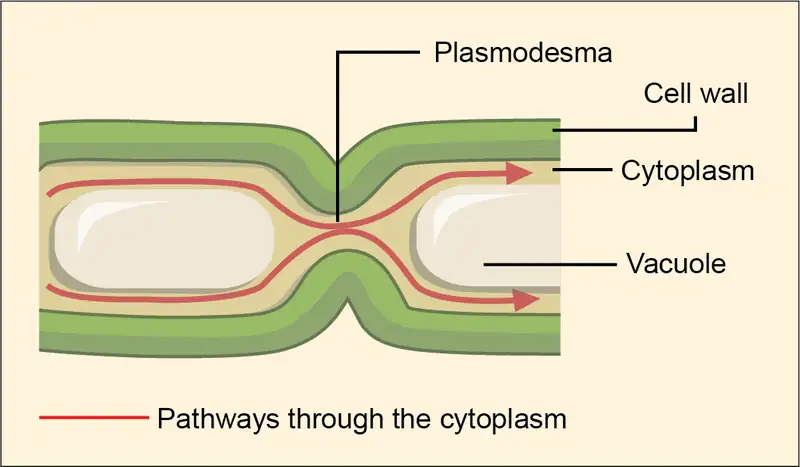
Tight Junctions¶
A tight junction is a watertight seal between two adjacent animal cells (Figure 4.29). Proteins (predominantly two proteins called claudins and occludins) tightly hold the cells against each other.
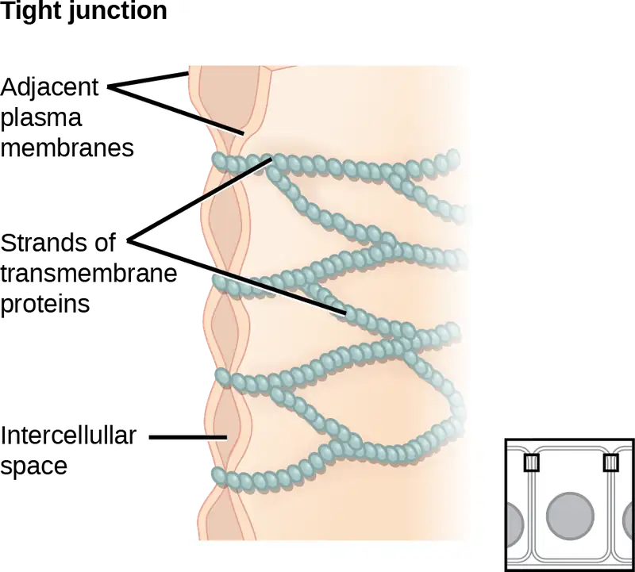
This tight adherence prevents materials from leaking between the cells; tight junctions are typically found in epithelial tissues that line internal organs and cavities, and comprise most of the skin. For example, the tight junctions of the epithelial cells lining your urinary bladder prevent urine from leaking out into the extracellular space.
Desmosomes¶
Also only in animal cells are desmosomes, which act like spot welds between adjacent epithelial cells (Figure 4.30). Cadherins, short proteins in the plasma membrane connect to intermediate filaments to create desmosomes. The cadherins connect two adjacent cells and maintain the cells in a sheet-like formation in organs and tissues that stretch, like the skin, heart, and muscles.
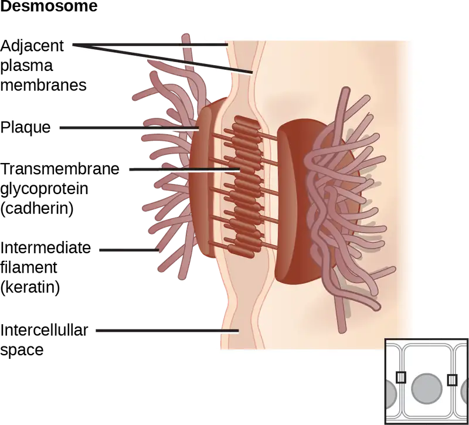
Gap Junctions¶
Gap junctions in animal cells are like plasmodesmata in plant cells in that they are channels between adjacent cells that allow for transporting ions, nutrients, and other substances that enable cells to communicate (Figure 4.31). Structurally, however, gap junctions and plasmodesmata differ.
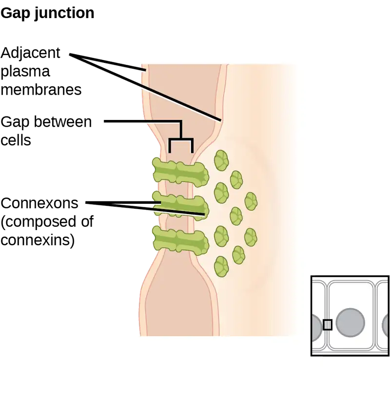
Gap junctions develop when a set of six proteins (connexins) in the plasma membrane arrange themselves in an elongated donut-like configuration - a connexon. When the connexon's pores (“doughnut holes”) in adjacent animal cells align, a channel between the two cells forms. Gap junctions are particularly important in cardiac muscle. The electrical signal for the muscle to contract passes efficiently through gap junctions, allowing the heart muscle cells to contract in tandem.
Interactive
To conduct a virtual microscopy lab and review the parts of a cell, work through the steps of this interactive assignment.
Chapter Review¶
Key Terms¶
- cell theory
- see unified cell theory
- cell wall
- rigid cell covering comprised of various molecules that protects the cell, provides structural support, and gives shape to the cell
- central vacuole
- large plant cell organelle that regulates the cell’s storage compartment, holds water, and plays a significant role in cell growth as the site of macromolecule degradation
- centrosome
- region in animal cells made of two centrioles that serves as an organizing center for microtubules
- chlorophyll
- green pigment that captures the light energy that drives the light reactions of photosynthesis
- chloroplast
- plant cell organelle that carries out photosynthesis
- chromatin
- protein-DNA complex that serves as the chromosomes' building material
- chromosome
- structure within the nucleus that comprises chromatin that contains DNA, the hereditary material
- cilium
- (plural = cilia) short, hair-like structure that extends from the plasma membrane in large numbers and functions to move an entire cell or move substances along the cell's outer surface
- cytoplasm
- entire region between the plasma membrane and the nuclear envelope, consisting of organelles suspended in the gel-like cytosol, the cytoskeleton, and various chemicals
- cytoskeleton
- protein fiber network that collectively maintains the cell's shape, secures some organelles in specific positions, allows cytoplasm and vesicles to move within the cell, and enables unicellular organisms to move independently
- cytosol
- the cytoplasm's gel-like material in which cell structures are suspended
- desmosome
- linkages between adjacent epithelial cells that form when cadherins in the plasma membrane attach to intermediate filaments
- electron microscope
- an instrument that magnifies an object using an electron beam that passes and bends through a lens system to visualize a specimen
- endomembrane system
- group of organelles and membranes in eukaryotic cells that work together modifying, packaging, and transporting lipids and proteins
- endoplasmic reticulum (ER)
- series of interconnected membranous structures within eukaryotic cells that collectively modify proteins and synthesize lipids
- eukaryotic cell
- cell that has a membrane-bound nucleus and several other membrane-bound compartments or sacs
- extracellular matrix
- material secreted from animal or fungal cells that provides mechanical protection and anchoring for the cells in the tissue
- flagellum
- (plural = flagella) long, hair-like structure that extends from the plasma membrane and moves the cell
- gap junction
- channel between two adjacent animal cells that allows ions, nutrients, and low molecular weight substances to pass between cells, enabling the cells to communicate
- Golgi apparatus
- eukaryotic organelle comprised of a series of stacked membranes that sorts, tags, and packages lipids and proteins for distribution
- intermediate filament
- cytoskeletal component, comprised of several fibrous protein intertwined strands, that bears tension, supports cell-cell junctions, and anchors cells to extracellular structures
- light microscope
- an instrument that magnifies an object using a beam of visible light that passes and bends through a lens system to visualize a specimen
- lysosome
- organelle in an animal cell that functions as the cell’s digestive component; it breaks down proteins, polysaccharides, lipids, nucleic acids, and even worn-out organelles
- microfilament
- the cytoskeleton system's narrowest element; it provides rigidity and shape to the cell and enables cellular movements
- microscope
- an instrument that magnifies an object
- microtubule
- the cytoskeleton system's widest element; it helps the cell resist compression, provides a track along which vesicles move through the cell, pulls replicated chromosomes to opposite ends of a dividing cell, and is the structural element of centrioles, flagella, and cilia
- mitochondria
- (singular = mitochondrion) cellular organelles responsible for carrying out cellular respiration, resulting in producing ATP, the cell’s main energy-carrying molecule
- nuclear envelope
- double-membrane structure that constitutes the nucleus' outermost portion
- nucleoid
- central part of a prokaryotic cell's central part where the chromosome is located
- nucleolus
- darkly staining body within the nucleus that is responsible for assembling ribosome subunits
- nucleoplasm
- semi-solid fluid inside the nucleus that contains the chromatin and nucleolus
- nucleus
- cell organelle that houses the cell’s DNA and directs ribosome and protein synthesis
- organelle
- compartment or sac within a cell
- peroxisome
- small, round organelle that contains hydrogen peroxide, oxidizes fatty acids and amino acids, and detoxifies many poisons
- plasma membrane
- phospholipid bilayer with embedded (integral) or attached (peripheral) proteins, and separates the cell's internal content from its surrounding environment
- plasmodesma
- (plural = plasmodesmata) channel that passes between adjacent plant cells' cell walls, connects their cytoplasm, and allows transporting of materials from cell to cell
- prokaryote
- unicellular organism that lacks a nucleus or any other membrane-bound organelle
- ribosome
- cellular structure that carries out protein synthesis
- rough endoplasmic reticulum (RER)
- region of the endoplasmic reticulum that is studded with ribosomes and engages in protein modification and phospholipid synthesis
- smooth endoplasmic reticulum (SER)
- region of the endoplasmic reticulum that has few or no ribosomes on its cytoplasmic surface and synthesizes carbohydrates, lipids, and steroid hormones; detoxifies certain chemicals (like pesticides, preservatives, medications, and environmental pollutants), and stores calcium ions
- tight junction
- protein adherence that creates a firm seal between two adjacent animal cells
- unified cell theory
- a biological concept that states that one or more cells comprise all organisms; the cell is the basic unit of life; and new cells arise from existing cells
- vacuole
- membrane-bound sac, somewhat larger than a vesicle, which functions in cellular storage and transport
- vesicle
- small, membrane-bound sac that functions in cellular storage and transport; its membrane is capable of fusing with the plasma membrane and the membranes of the endoplasmic reticulum and Golgi apparatus
Summary¶
4.1 Studying Cells¶
A cell is the smallest unit of life. Most cells are so tiny that we cannot see them with the naked eye. Therefore, scientists use microscopes to study cells. Electron microscopes provide higher magnification, higher resolution, and more detail than light microscopes. The unified cell theory states that one or more cells comprise all organisms, the cell is the basic unit of life, and new cells arise from existing cells.
4.2 Prokaryotic Cells¶
Prokaryotes are single-celled organisms of the domains Bacteria and Archaea. All prokaryotes have plasma membranes, cytoplasm, ribosomes, and DNA that is not membrane-bound. Most have peptidoglycan cell walls and many have polysaccharide capsules. Prokaryotic cells range in diameter from 0.1 to 5.0 μm.
As a cell increases in size, its surface area-to-volume ratio decreases. If the cell grows too large, the plasma membrane will not have sufficient surface area to support the rate of diffusion required for the increased volume.
4.3 Eukaryotic Cells¶
Like a prokaryotic cell, a eukaryotic cell has a plasma membrane, cytoplasm, and ribosomes, but a eukaryotic cell is typically larger than a prokaryotic cell, has a true nucleus (meaning a membrane surrounds its DNA), and has other membrane-bound organelles that allow for compartmentalizing functions. The plasma membrane is a phospholipid bilayer embedded with proteins. The nucleus’s nucleolus is the site of ribosome assembly. We find ribosomes either in the cytoplasm or attached to the cytoplasmic side of the plasma membrane or endoplasmic reticulum. They perform protein synthesis. Mitochondria participate in cellular respiration. They are responsible for the majority of ATP produced in the cell. Peroxisomes hydrolyze fatty acids, amino acids, and some toxins. Vesicles and vacuoles are storage and transport compartments. In plant cells, vacuoles also help break down macromolecules.
Animal cells also have a centrosome and lysosomes. The centrosome has two bodies perpendicular to each other, the centrioles, and has an unknown purpose in cell division. Lysosomes are the digestive organelles of animal cells.
Plant cells and plant-like cells each have a cell wall, chloroplasts, and a central vacuole. The plant cell wall, whose primary component is cellulose, protects the cell, provides structural support, and gives the cell shape. Photosynthesis takes place in chloroplasts. The central vacuole can expand without having to produce more cytoplasm.
4.4 The Endomembrane System and Proteins¶
The endomembrane system includes the nuclear envelope, lysosomes, vesicles, the ER, and Golgi apparatus, as well as the plasma membrane. These cellular components work together to modify, package, tag, and transport proteins and lipids that form the membranes.
The RER modifies proteins and synthesizes phospholipids in cell membranes. The SER synthesizes carbohydrates, lipids, and steroid hormones; engages in the detoxification of medications and poisons; and stores calcium ions. Sorting, tagging, packaging, and distributing lipids and proteins take place in the Golgi apparatus. Budding RER and Golgi membranes create lysosomes. Lysosomes digest macromolecules, recycle worn-out organelles, and destroy pathogens.
4.5 The Cytoskeleton¶
The cytoskeleton has three different protein element types. From narrowest to widest, they are the microfilaments (actin filaments), intermediate filaments, and microtubules. Biologists often associate microfilaments with myosin. They provide rigidity and shape to the cell and facilitate cellular movements. Intermediate filaments bear tension and anchor the nucleus and other organelles in place. Microtubules help the cell resist compression, serve as tracks for motor proteins that move vesicles through the cell, and pull replicated chromosomes to opposite ends of a dividing cell. They are also the structural element of centrioles, flagella, and cilia.
4.6 Connections between Cells and Cellular Activities¶
Animal cells communicate via their extracellular matrices and are connected to each other via tight junctions, desmosomes, and gap junctions. Plant cells are connected and communicate with each other via plasmodesmata.
When protein receptors on the plasma membrane's surface of an animal cell bind to a substance in the extracellular matrix, a chain of reactions begins that changes activities taking place within the cell. Plasmodesmata are channels between adjacent plant cells, while gap junctions are channels between adjacent animal cells. However, their structures are quite different. A tight junction is a watertight seal between two adjacent cells, while a desmosome acts like a spot weld.
Review Questions¶
4.1 Studying Cells¶
1. When viewing a specimen through a light microscope, scientists use ________ to distinguish the individual components of cells.
- a beam of electrons
- radioactive isotopes
- special stains
- high temperatures
Answer
C
2. The ________ is the basic unit of life.
- organism
- cell
- tissue
- organ
Answer
B
4.2 Prokaryotic Cells¶
3. Prokaryotes depend on ________ to obtain some materials and to get rid of wastes.
- ribosomes
- flagella
- cell division
- diffusion
Answer
D
4. Bacteria that lack fimbriae are less likely to ________.
- adhere to cell surfaces
- swim through bodily fluids
- synthesize proteins
- retain the ability to divide
Answer
A
5. Which of the following organisms is a prokaryote?
- amoeba
- influenza A virus
- charophyte algae
- E. coli
Answer
D
4.3 Eukaryotic Cells¶
6. Which of the following is surrounded by two phospholipid bilayers?
- the ribosomes
- the vesicles
- the cytoplasm
- the nucleoplasm
Answer
D
7. Peroxisomes got their name because hydrogen peroxide is:
- used in their detoxification reactions
- produced during their oxidation reactions
- incorporated into their membranes
- a cofactor for the organelles’ enzymes
Answer
B
8. In plant cells, the function of the lysosomes is carried out by __________.
- vacuoles
- peroxisomes
- ribosomes
- nuclei
Answer
A
9. Which of the following is both in eukaryotic and prokaryotic cells?
- nucleus
- mitochondrion
- vacuole
- ribosomes
Answer
D
10. Tay-Sachs disease is a genetic disorder that results in the destruction of neurons due to a buildup of sphingolipids in the cells. Which organelle is malfunctioning in Tay-Sachs?
- lysosome
- endoplasmic reticulum
- peroxisome
- mitochondria
Answer
A
4.4 The Endomembrane System and Proteins¶
11. Which of the following is not a component of the endomembrane system?
- mitochondrion
- Golgi apparatus
- endoplasmic reticulum
- lysosome
Answer
A
12. The process by which a cell engulfs a foreign particle is known as:
- endosymbiosis
- phagocytosis
- hydrolysis
- membrane synthesis
Answer
B
13. Which of the following is most likely to have the greatest concentration of smooth endoplasmic reticulum?
- a cell that secretes enzymes
- a cell that destroys pathogens
- a cell that makes steroid hormones
- a cell that engages in photosynthesis
Answer
C
14. Which of the following sequences correctly lists in order the steps involved in the incorporation of a proteinaceous molecule within a cell?
- protein synthesis of the protein on the ribosome; modification in the Golgi apparatus; packaging in the endoplasmic reticulum; tagging in the vesicle
- synthesis of the protein on the lysosome; tagging in the Golgi; packaging in the vesicle; distribution in the endoplasmic reticulum
- synthesis of the protein on the ribosome; modification in the endoplasmic reticulum; tagging in the Golgi; distribution via the vesicle
- synthesis of the protein on the lysosome; packaging in the vesicle; distribution via the Golgi; tagging in the endoplasmic reticulum
Answer
C
15. Congenital disorders of glycosylation are a growing class of rare diseases. Which organelle would be most commonly involved in the glycoprotein disorder portion of the group?
- RER
- ribosomes
- endosomes
- Golgi apparatus
Answer
D
4.5 The Cytoskeleton¶
16. Which of the following have the ability to disassemble and reform quickly?
- microfilaments and intermediate filaments
- microfilaments and microtubules
- intermediate filaments and microtubules
- only intermediate filaments
Answer
B
17. Which of the following do not play a role in intracellular movement?
- microfilaments and intermediate filaments
- microfilaments and microtubules
- intermediate filaments and microtubules
- only intermediate filaments
Answer
D
18. In humans, _____ are used to move a cell within its environment while _____ are used to move the environment relative to the cell.
- cilia, pseudopodia
- flagella; cilia
- microtubules; flagella
- microfilaments; microtubules
Answer
B
4.6 Connections between Cells and Cellular Activities¶
19. Which of the following are only in plant cells?
- gap junctions
- desmosomes
- plasmodesmata
- tight junctions
Answer
C
20. The key components of desmosomes are cadherins and __________.
- actin
- microfilaments
- intermediate filaments
- microtubules
Answer
C
21. Diseased animal cells may produce molecules that activate death cascades to kill the cells in a controlled manner. Why would neighboring healthy cells also die?
- The death molecule is passed through desmosomes.
- The death molecule is passed through plasmodesmata.
- The death molecule disrupts the extracellular matrix.
- The death molecule passes through gap junctions.
Answer
D
Critical Thinking Questions¶
4.1 Studying Cells¶
22. In your everyday life, you have probably noticed that certain instruments are ideal for certain situations. For example, you would use a spoon rather than a fork to eat soup because a spoon is shaped for scooping, while soup would slip between the tines of a fork. The use of ideal instruments also applies in science. In what situation(s) would the use of a light microscope be ideal, and why?
Answer
A light microscope would be ideal when viewing a small living organism, especially when the cell has been stained to reveal details.
23. In what situation(s) would the use of a scanning electron microscope be ideal, and why?
Answer
A scanning electron microscope would be ideal when you want to view the minute details of a cell’s surface, because its beam of electrons moves back and forth over the surface to convey the image.
24. In what situation(s) would a transmission electron microscope be ideal, and why?
Answer
A transmission electron microscope would be ideal for viewing the cell’s internal structures, because many of the internal structures have membranes that are not visible by the light microscope.
25. What are the advantages and disadvantages of each of these types of microscopes?
Answer
The advantages of light microscopes are that they are easily obtained, and the light beam does not kill the cells. However, typical light microscopes are somewhat limited in the amount of detail they can reveal. Electron microscopes are ideal because you can view intricate details, but they are bulky and costly, and preparation for the microscopic examination kills the specimen.
26. Explain how the formation of an adult human follows the cell theory.
Answer
The cell theory states:
- All living things are made of cells.;
- Cells are the most basic unit of life.;
- New cells arise from existing cells.
All humans are multicellular organisms whose smallest building blocks are cells. Adult humans begin with the fusion of a male gamete cell with a female gamete cell to form a fertilized egg (single cell). That cell then divides into two cells, which each divides into two more cells, and so forth until all the cells of a human embryo are made. As the embryo passes through all the developmental stages to make an adult human, the cells that are added arise from division of existing cells.
4.2 Prokaryotic Cells¶
27. Antibiotics are medicines that are used to fight bacterial infections. These medicines kill prokaryotic cells without harming human cells. What part or parts of the bacterial cell do you think antibiotics target? Why?
Answer
The cell wall would be targeted by antibiotics as well as the bacteria’s ability to replicate. This would inhibit the bacteria’s ability to reproduce, and it would compromise its defense mechanisms.
28. Explain why not all microbes are harmful.
Answer
Some microbes are beneficial. For instance, E. coli bacteria populate the human gut and help break down fiber in the diet. Some foods such as yogurt are formed by bacteria.
4.3 Eukaryotic Cells¶
29. You already know that ribosomes are abundant in red blood cells. In what other cells of the body would you find them in great abundance? Why?
Answer
Ribosomes are abundant in muscle cells as well because muscle cells are constructed of the proteins made by the ribosomes.
30. What are the structural and functional similarities and differences between mitochondria and chloroplasts?
Answer
Both are similar in that they are enveloped in a double membrane, both have an intermembrane space, and both make ATP. Both mitochondria and chloroplasts have DNA, and mitochondria have inner folds called cristae and a matrix, while chloroplasts have chlorophyll and accessory pigments in the thylakoids that form stacks (grana) and a stroma.
31. Why are plasma membranes arranged as a bilayer rather than a monolayer?
Answer
The plasma membrane is a bilayer because the phospholipids that create it are amphiphilic (hydrophilic head, hydrophobic tail). If the plasma membrane was a monolayer, the hydrophobic tails of the phospholipids would be in direct contact with the inside of the cell. Since the cytoplasm is largely made of water, this interaction would not be stable, and would disrupt the plasma membrane of the cell as the tails were repulsed by the cytoplasm (in water, phospholipids spontaneously form spherical droplets with the hydrophilic heads facing outward to isolate the hydrophobic tails from the water). By having a bilayer, the hydrophilic heads are exposed to the aqueous cytoplasm and extracellular space, while the hydrophobic tails interact with each other in the middle of the membrane.
4.4 The Endomembrane System and Proteins¶
32. In the context of cell biology, what do we mean by form follows function? What are at least two examples of this concept?
Answer
“Form follows function” refers to the idea that the function of a body part dictates the form of that body part. As an example, compare your arm to a bat’s wing. While the bones of the two correspond, the parts serve different functions in each organism and their forms have adapted to follow that function.
33. In your opinion, is the nuclear membrane part of the endomembrane system? Why or why not? Defend your answer.
Answer
Since the external surface of the nuclear membrane is continuous with the rough endoplasmic reticulum, which is part of the endomembrane system, then it is correct to say that it is part of the system.
4.5 The Cytoskeleton¶
34. What are the similarities and differences between the structures of centrioles and flagella?
Answer
Centrioles and flagella are alike in that they are made up of microtubules. In centrioles, two rings of nine microtubule “triplets” are arranged at right angles to one another. This arrangement does not occur in flagella.
35. How do cilia and flagella differ?
Answer
Cilia and flagella are alike in that they are made up of microtubules. Cilia are short, hair-like structures that exist in large numbers and usually cover the entire surface of the plasma membrane. Flagella, in contrast, are long, hair-like structures; when flagella are present, a cell has just one or two.
36. Describe how microfilaments and microtubules are involved in the phagocytosis and destruction of a pathogen by a macrophage.
Answer
A macrophage engulfs a pathogen by rearranging its actin microfilaments to bend the plasma membrane around the pathogen. Once the pathogen is sealed in an endosome inside the macrophage, the vesicle is walked along microtubules until it combines with a lysosome to digest the pathogen.
37. Compare and contrast the boundaries that plant, animal, and bacteria cells use to separate themselves from their surrounding environment.
Answer
All three cell types have a plasma membrane that borders the cytoplasm on its interior side. In animal cells, the exterior side of the plasma membrane is in contact with the extracellular environment. However, in plant and bacteria cells, a cell wall surrounds the outside of the plasma membrane. In plants, the cell wall is made of cellulose, while in bacteria the cell wall is made of peptidoglycan. Gram-negative bacteria also have an additional capsule made of lipopolysaccharides that surrounds their cell wall.
4.6 Connections between Cells and Cellular Activities¶
38. How does the structure of a plasmodesma differ from that of a gap junction?
Answer
They differ because plant cell walls are rigid. Plasmodesmata, which a plant cell needs for transportation and communication, are able to allow movement of really large molecules. Gap junctions are necessary in animal cells for transportation and communication.
39. Explain how the extracellular matrix functions.
Answer
The extracellular matrix functions in support and attachment for animal tissues. It also functions in the healing and growth of the tissue.
40. Pathogenic E. coli have recently been shown to degrade tight junction proteins during infection. How would this provide an advantage to the bacteria?
Answer
E. coli infections generally cause food poisoning, meaning that the invading bacteria cross from the lumen of the gut into the rest of the body. Tight junctions hold the epithelial layer that lines the digestive tract together so that the material that crosses into the body is tightly regulated. One way E. coli can avoid this regulation is to destroy the tight junctions so that it can enter the body between the epithelial cells, rather than having to go through the cells.
Visual Connection Questions¶
4.2 Prokaryotic Cells¶
41. Figure 4.7 Prokaryotic cells are much smaller than eukaryotic cells. What advantages might small cell size confer on a cell? What advantages might large cell size have?
Answer
Figure 4.7 Substances can diffuse more quickly through small cells. Small cells have no need for organelles and therefore do not need to expend energy getting substances across organelle membranes. Large cells have organelles that can separate cellular processes, enabling them to build molecules that are more complex.
4.3 Eukaryotic Cells¶
42. Figure 4.8 If the nucleolus were not able to carry out its function, what other cellular organelles would be affected?
Answer
Figure 4.8 Free ribosomes and rough endoplasmic reticulum (which contains ribosomes) would not be able to form.
4.4 The Endomembrane System and Proteins¶
43. Figure 4.18 If a peripheral membrane protein were synthesized in the lumen (inside) of the ER, would it end up on the inside or outside of the plasma membrane?
Answer
Figure 4.18 It would end up on the outside. After the vesicle passes through the Golgi apparatus and fuses with the plasma membrane, it turns inside out.
Adapted from Biology 2e by OpenStax, licensed under CC BY 4.0. Access the original for free at openstax.org. Changes: converted to the web reading format of The Open Book Project.